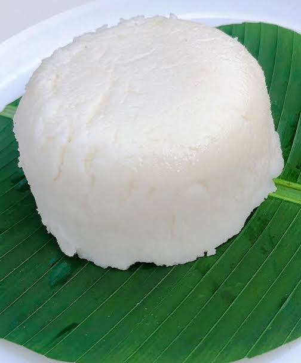

Kawunga
Kawunga is a simple East African staple made by cooking maize flour in boiling water and stirring until it becomes thick and firm. It is commonly served with beans, vegetables or meat sauce.

About This Dish
Kawunga is enjoyed in Rwanda and other parts of East Africa. It is affordable, filling and easy to prepare. The dish is usually eaten with a sauce or stew to make a complete meal.
Ingredients
- 2 cups maize flour
- 3 cups water
- Salt (optional)
You can serve Kawunga with beans, vegetables or your preferred stew.
Preparation Steps
- Bring the water to a boil in a cooking pot.
- Add a little maize flour while stirring.
- Gradually add the remaining flour and continue stirring to prevent lumps.
- Keep stirring until the mixture becomes thick and pulls away from the sides of the pot.
- Cook for a few more minutes, then shape and serve warm.
Serving Suggestions
Serve Kawunga with cooked beans, leafy vegetables or a tomato-based meat sauce.